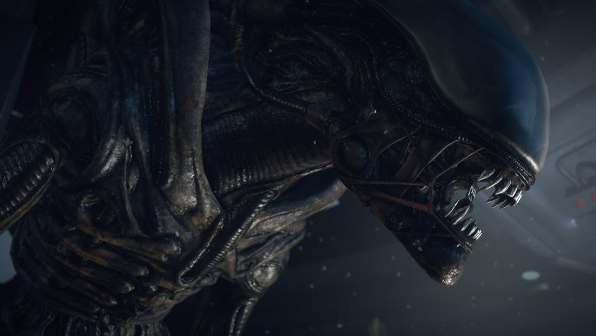

Ksenomorf
Ksenomorf (ang. Xenomorph gr. ksenos + morphe − obcy kształt) (nazywany też po prostu obcym) – gatunek obcej formy życia. Istota przechodząca stadia larwalne i żyjąca w społeczności przypominającej owadzią.
| Ksenomorf | |
|  | |
| Opis fizyczny | |
| Kolor |
|
| Wysokość | 1.70m |
| Cechy |
|
Biologia
Wygląd Ksenomorfów można określić dwoma słowami − biomechaniczny i humanoidalny. Ksenomorf ma pewne cechy anatomiczne przypominające człowieka − humanoidalna sylwetka, cztery kończyny. Porusza się niczym małpa na rękach i nogach, świetnie się wspina, umiejętnie biega po ścianach i sufitach, pływa. Ma również długi, ostro zakończony ogon. Z czarnego ciała wystają wypustki, ocieka śluzem, który po chwili zmienia się w lepką, kleistą substancję. Po zaschnięciu krystalizuje się, tworząc twardą masę (przydatną do unieruchamiania złapanych przez obcych ludzi). Podłużna głowa posiada jedynie oczodoły zamieszczone centralnie w czaszce przykrytej czarną lub białą kopułą. Mimo to, Ksenomorf nie ma problemu z lokalizacją ofiar i poruszaniem się po każdym terenie. W jego pysku znajduje się mniejsza, wewnętrzna szczęka. Krew jest silnie żrącym kwasem, który neutralizuje się po pewnym czasie jeśli nie pozostaje w "krwiobiegu" obcego. Zapewne działa jako jeden z mechanizmów obronnych. Ksenomorfy panicznie boją się ognia. Pojedyncze osobniki świetnie sobie radzą mimo iż to stworzenia grupowe. Ksenomorf posiada również dwie pary wyrostków na plecach przypominające rury, które prawdopodobnie chronią stworzenie przed atakami z tyłu lub znajdują się w nich narządy oddechowe lub też odbywa się w nich filtracja krwi. Ksenomorfy mają wyjątkowo rozwinięty węch, większość komórek węchowych położona jest w wewnętrznych szczękach. W olbrzymiej głowie mieści się rozbudowany mózg oraz inne środki nerwowe. Nie wiadomo czym oddycha Ksenomorf zapewne wieloma rodzajami gazów. Może on przeżyć pod wodą, środowisku tlenowym lub beztlenowym, czy nawet przez krótki czas w próżni kosmicznej. Posiada również zdolności do zajścia w stan podobny do hibernacji, dzięki któremu jest zdolny przetrwać w uśpieniu wiele lat. Ksenomorfy są drapieżnikami, mogą odżywiać się jednak wszystkim co zawiera białko. Ksenomorf pokryty jest niezwykle wytrzymałą skórą. Ma ona czarną barwę (zieloną u Predaliena, rudą u Runnera) i wytwarza duże ilości śluzu. Zapewnia ona odporność na niekorzystne warunki środowiska, urazy mechaniczne oraz zmienne temperatury. Ksenomorfy są w stanie przetrwać niekorzystne warunki atmosferyczne, wahania temperatur i niedostatek pożywienia, przez co mogą występować na jakichkolwiek planetach. Długość życia Ksenomorfa jest nieznana; wiele źródeł podaje ją jako stosunkowo krótką, inne zaś spekulują nad jego długowiecznością, co jest mało prawdopodobne.
Rozmnażanie
Podobnie jak owady czy płazy, obcy przechodzi stadia rozwoju. Z niezapłodnionego jaja złożonego przez królową wylęga się ośmiu nożny twarzołap, którego zadaniem jest rozpocząć kolejne stadium w organizmie ostatecznego nosiciela, np. człowieka, psa itd.. Po wykonaniu tego zadania, twarzołap umiera. Wewnątrz nosiciela dojrzewa embrion po czym "wylęga" się na zewnątrz Chestburster, rozrywając klatkę piersiową, co powoduje wyjątkowo straszną i bolesną śmierć żywiciela. Ksenomorf posiada niektóre cechy swojego żywiciela np.(mogą poruszać się na dwóch lub czterech kończynach oraz posiadać inne charakterystyczne cechy). Królowa wydaje potomstwo w drodze partenogenezy. Nie potrzebuje zapłodnienia, żeby złożyć jaja. Ksenomorfy są stworzeniami bezpłciowymi lub jednopłciowymi. Dlatego też w gatunku ksenomorfów nie występuje zjawisko seksualności.
Odmiany
Twarzołap
Wylęga się z jaja, gdy wyczuje w pobliżu obecność ofiary. Jest ruchliwym organizmem przypominającym stawonoga z czterema parami odnóży i segmentowanym ogonem. Atakuje ofiarę przylegając do jej twarzy i owijając ogon wokół szyi. W takiej pozycji infekuje ofiarę embrionem.
Embrion

Jest zarodkiem dorosłego osobnika rozwijającym się wewnątrz klatki piersiowej żywiciela. Umieszczony tam został przez twarzołapa. Przez okres kilku lub kilkunastu godzin pasożytuje w ofierze, przygotowując się do wyjścia na świat.
ChestBuster
Jest młodym osobnikiem, który dopiero co opuścił ciało żywiciela. Posiada wężowaty kształt oraz zalążki przednich kończyn. Jest jeszcze słaby i delikatny, dlatego też od razu szuka bezpiecznej kryjówki, gdzie mógłby dokończyć przemianę. Gwałtownie rośnie i zrzuca wylinki.
Wojownik

Dorosły osobnik. Szybki, zwinny, agresywny. Ma około dwóch metrów wzrostu i humanoidalną sylwetkę, od robotnicy różni się tylko powierzchnią głowy. Zadaniem tej odmiany ksenomorfa jest polowanie oraz obrona gniazda.
Robotnica

Jeżeli chodzi o wygląd, od wojownika różni się szczegółami. Najwidoczniejszym z nich jest gładka powierzchnia głowy, która u wojowników ma kostne i skórne wzory. Jej zadaniem jest budowa i dbanie o gniazdo, unieruchamianie przywleczonych przez wojowników ofiar oraz karmienie królowej.
Królowa

Dominujący osobnik, jako jedyny posiadający zdolność rozmnażania się. Trzykrotnie większy od robotnicy czy wojownika, posiada charakterystyczną koronę oraz dwie pary przednich kończyn. Wytwarza olbrzymi odwłok, w którym produkowane są jaja.
Predalien
Nietypowy ksenomorf, posiadający pewne cechy Yautja. Niezwykle silny, wytrzymały i agresywny. Posiadał zdolność rozmnażania się – możliwe, że był młodocianą królową. Narodził się z ciała Yautja zainfekowanego przez twarzołapa.